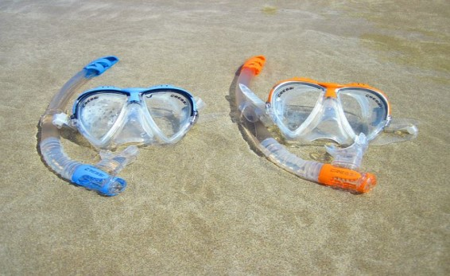
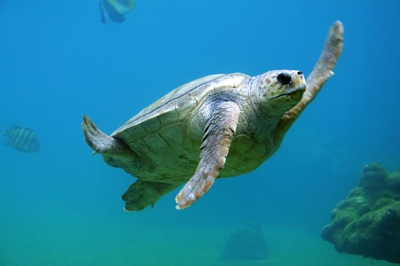
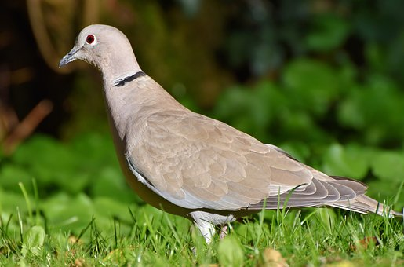

Welcome to Pigeon Island National Park
Pigeon Island National park is one of the maine national parks of Sri Lanka,which is situated 1 km off the Eastern province town called "Nilaveli" This park contains some of the best remaining coral reefs in Sri Lanka and it was designated as a pigeon santuary in 1963, but it later was re-designated as a National Park. This national park is the 17th in Sri Lanka. The island was used as a shooting range during the colonial era. Pigeon Island is one of the several protected areas affected by the Indian Ocean tsunami in 2004. Activities 1.Snorkeling   The reef at pigion island is shallow enough for people to dive underwater and explore the reef Visitors have the opportunity to see a variety of corals and reef fish and many types of sea turtles. 2.Hiking  If swimming and snorkaling isn't your thing you can go an adventurous hike through the island. If you are bird enthusiast, you will be able to discover a variety of birds.